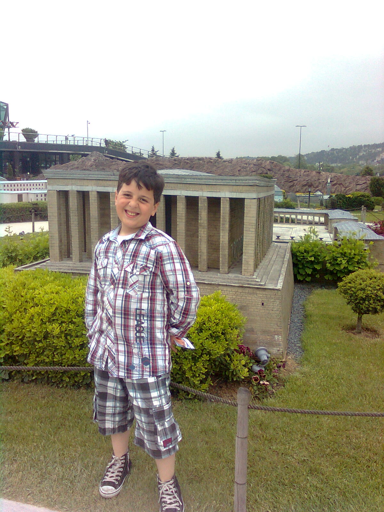

Selamlar
Ben Berat,10 Mayıs 2002 Yalova doğumluyum.Çocukluğum iyi döneme geldiği için bir hayli şanslıyım.Genellikle çocukluğumu kuzenlerimle ve köydeki arkadaşlarımla geçirdim
Cocukluğuma ait bi fotoğraf...
Liseyi Fatih Sultan Mehmet Anadolu Lisesin de okudum ve bu lisede bir çok anı biriktirdim ve de iyi dostlar.Liseye başladığımda dersleri pek umursamadım okula eğlencesine gidip geliyordum bu 10. sınıfa kadar böyle devam etti. 11 de hocaların bizi uyarmasını umursamadım ve 11 de pek iyi geçti söylenemez.12 ye geçtiğimde her şeyin farkına varmıştım biraz geç kalmış olsamda.12. sınıfta bambaşka bir hayatım oldu, her günüm okul dershane ev arası geçip geldi.Dershanede bir çok güzel insan ve hoca tanıdım,hepsi bana çok şey kattı.Hala geri bakıp ne kadar guzel anılar biriktirmişim diyorum.Günümüze gelicek olursak şuan Manisa Celal Bayar Universitesi bilgisayar programcılığı 1.Sınıf öğrencisiyim.Burayı bitirip DGS ile yazılım mühendisliğini kazanmak istiyorum bakalım gelecekte beni ne gibi süprizler bekliyor.

Şimdi ki halimden bir kare :)